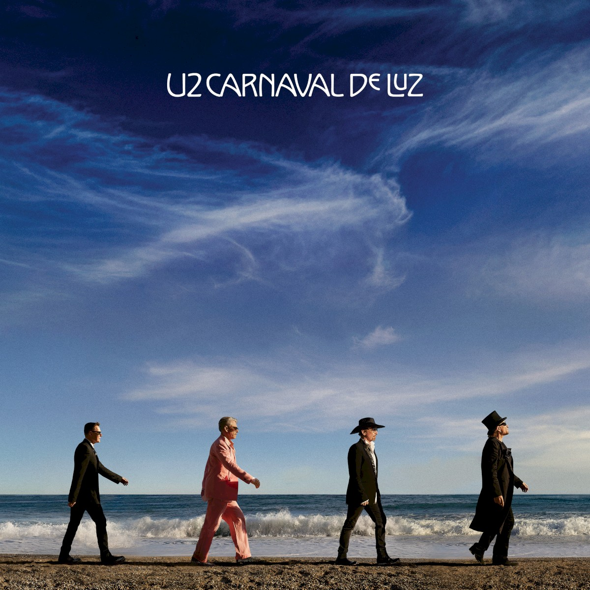

O U2 anunciou oficialmente em 24 de setembro Carnaval De Luz. O álbum será lançado em 13 de novembro de 2026 e é apresentado pela banda como seu 16º álbum de estúdio e o primeiro de material novo em nove anos.
Produzido por Jacknife Lee, o disco reúne 12 músicas e chega no ano em que Bono, The Edge, Adam Clayton e Larry Mullen Jr. celebram cinco décadas desde a formação da banda em Dublin.

Carnaval De Luz
- Lançamento
- 13 de novembro de 2026
- Faixas
- 12 músicas
- Produção
- Jacknife Lee
- Status
- Pré-venda e pre-save abertos nos canais oficiais
O que está confirmado
O anúncio oficial descreve o álbum como uma coleção que atravessa espiritualidade, amizade, liberdade e resistência. “Street Of Dreams”, divulgada primeiro, abriu a nova fase. “Silencio” é a segunda faixa revelada e foi lançada em 24 de setembro.
O disco também traz colaborações de Brian Eno, Martin Garrix e Daniel Lanois. A faixa final, “Torn”, é um dueto de Bono com Dolly Parton e foi identificada pelo U2 como a última performance vocal gravada pela artista.
Tracklist oficial
- Go (Carnaval De Luz)
- La Reina
- Street Of Dreams
- The Mirror Maker (Rosalía)
- Superficiality
- If The World Is At War We Better Not Be
- Silencio
- The Greatest Show On Earth
- Glorify
- Midnight Sunshine
- Can't Stop Us Now
- Torn (Feat. Dolly Parton)
Formatos
O U2 confirmou box sets deluxe em vinil e CD, variantes limitadas de vinil, CD padrão, vinil padrão e download digital. A pré-venda e o pre-save foram abertos nos canais oficiais.
Próxima matéria“Silencio” já está disponível→